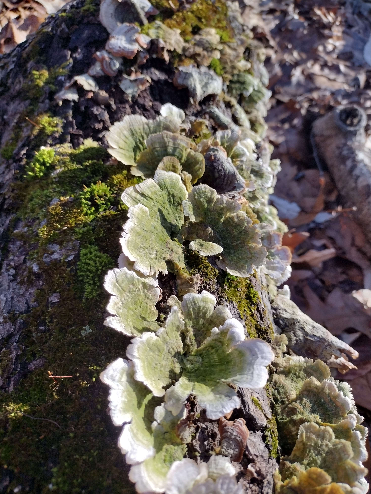

Some of Rose T's Favorite Things to Do

Rose reconnects with nature, always on the lookout for hidden mushrooms, flowers, and wildlife.
Living in a fast-paced city with a blossoming new career, Rose T takes every opportunity to reconnect with the natural world. Whether it's a local trail or a trip across state lines, they’re always spotting mushrooms, flowers, and wildlife — and sharing those small marvels with friends.
 From rolling dice to strategizing in online games, Rose thrives on storytelling and collaboration.
From rolling dice to strategizing in online games, Rose thrives on storytelling and collaboration.
Gaming isn’t just play for Rose T — it’s creative collaboration. From strategy in World of Warcraft to storytelling in tabletop RPGs, Rose T brings passion, quick thinking, and charm to every session — even when the dice disagree.
 Digital downtime means playful cat characters named after friends — a sweet and silly tradition.
Digital downtime means playful cat characters named after friends — a sweet and silly tradition.
Cat games with friends’ names? Yes, please. Rose T’s digital downtime often includes imaginative play with feline characters named for the people they care about — a sweet and silly way to stay connected even across distances.